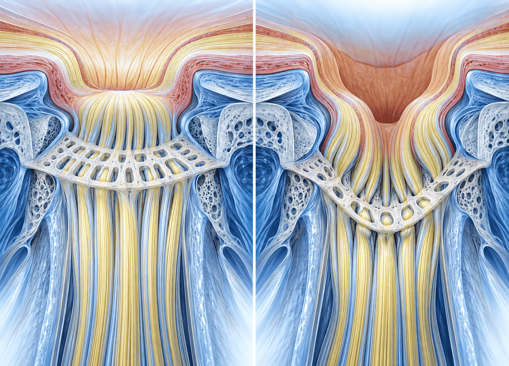
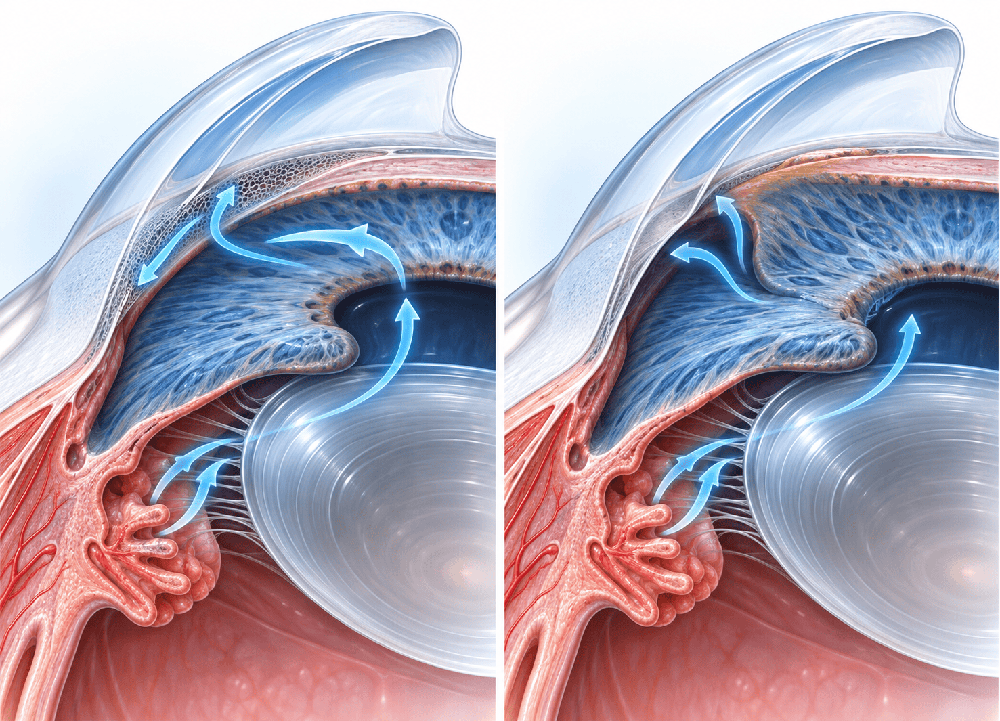
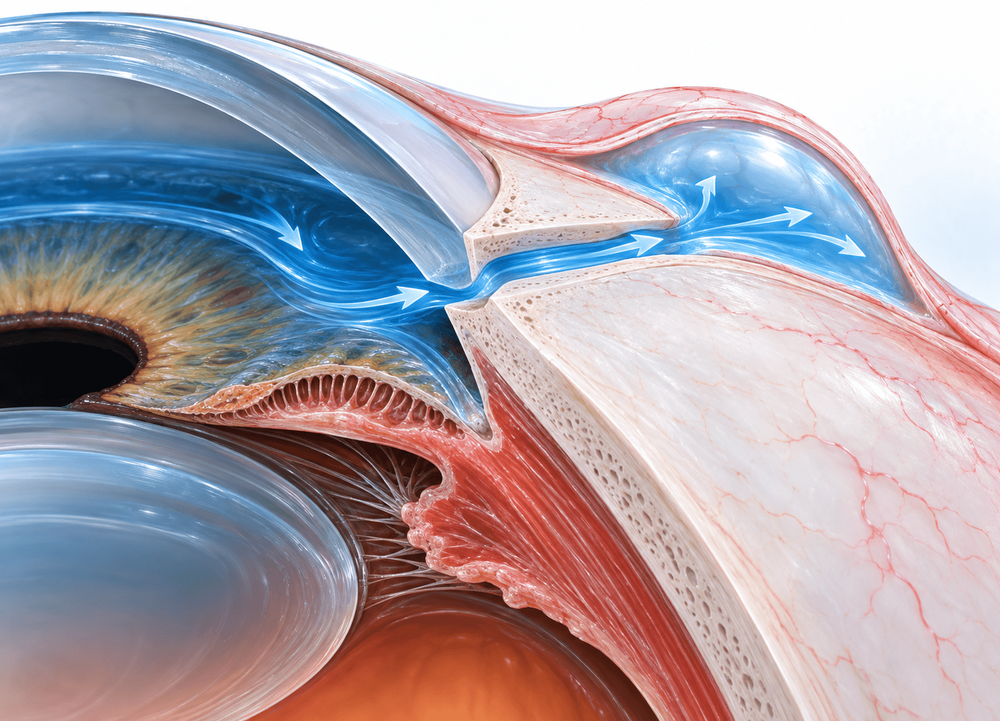

내과에서 만나는 녹내장:
정상안압·약물 위험·협진
시신경과 전방각의 이해에서 약물 위험·혈압·장기 협진까지

눈에서 뇌로
녹내장은 시신경유두가 손상되는 시신경병증이다
눈·시신경·시각피질을 잇는 경로에서 손상의 위치를 이해한다
눈과 망막
눈에 들어온 시각 정보가 시신경으로 전달된다.
 시신경과 시교차
시신경과 시교차양안의 시신경 일부가 시교차(optic chiasm)에서 교차하고 외측슬상체로 이어진다.
시각피질
후두엽의 시각피질(visual cortex)에서 시각 정보가 처리된다.
강의는 카메라 정보를 시각피질로 전달하는 Blindsight 구상을 도입으로 소개한 뒤 눈과 시신경 구조를 설명했다.
해부와 기전 · 사상판
사상판의 변형은 축삭 흐름과 신경섬유를 손상시킨다
시신경유두(optic nerve head, optic disc)와 사상판(lamina cribrosa)
체 모양의 지지 조직
사상판은 주로 콜라겐으로 이루어진 결체조직이다. 구멍 사이로 시신경섬유가 통과하고 지지를 받는다.
압력과 축삭 흐름 안쪽 압력으로 사상판이 휘면 통과하는 섬유의 축삭 흐름(axonal flow)이 차단되고 손상이 생긴다고 설명했다.
 유두의 변화
유두의 변화함몰이 커지고 신경조직이 줄어든다. 진행한 눈에서는 사상판이 드러나며 유두출혈도 관찰될 수 있다.

녹내장은 시신경병증의 일부로, 가장 앞부분인 시신경유두의 진행성 손상을 특징으로 한다.
진단 · 구조 평가
OCT는 신경섬유층 두께를 정량적으로 평가한다
광간섭단층촬영(OCT): 빛을 이용한 구조적 평가
유두 모양의 개인차
유두함몰비(C/D ratio)와 유두 모양은 개인차가 커서 모양만으로 판단하기 어렵다고 설명했다.
OCT의 원리 빛을 이용해 시신경유두 주변 신경섬유층 두께를 재고, 통계적으로 정상과 다른지를 표시한다.
구조 손상의 정량화 두께 측정으로 구조적 손상의 정도를 정량적으로 파악할 수 있게 되었다고 설명했다.
OCT 혈관 영상
OCT 원리를 이용한 혈관 영상은 조영제 없이 혈관을 볼 수 있으며, 연구와 임상에 사용된다고 소개했다.
구조적 평가와 환자가 실제로 보는 범위를 평가하는 기능검사를 함께 이해한다.
진단 · 기능 평가
시력이 남아 있어도 시야 손상은 진행할 수 있다
시야검사(visual field test)와 늦은 자각의 이유
처음부터 떨어지는 것은 시력이 아니다
녹내장은 보이는 범위가 줄어드는 질환이다. 시야검사로 환자가 어느 범위의 자극을 인지하는지 평가한다.
주변 시야의 손상 많은 환자에서 바깥쪽부터 보이지 않는 부분이 늘어 말기에는 중심 부분만 남을 수 있다.
양안의 서로 다른 속도
양안 진행 속도가 다르면 두 눈을 뜬 일상에서 한쪽 손상을 늦게 알아차릴 수 있다.
자각과 검사 결과
환자는 지워진 것처럼 느낄 수 있다. 자각 증상이 적다는 이유로 구조·기능 변화를 배제하지 않는다.
시야가 줄어드는 방식과 양안의 진행 차이가 녹내장 발견을 늦추는 요인이 된다.
전방각 · 개방과 폐쇄
방수 유출로가 열려 있는지에 따라 나눈다
방수(aqueous humor)의 생성·이동·배출과 전방각
방수의 흐름
모양체에서 생성된 방수는 수정체와 홍채 사이를 지나 전방으로 이동하고, 섬유주(trabecular meshwork)를 거쳐 전신순환으로 배출된다.
개방각과 폐쇄각 홍채가 방수 유출로를 막는지에 따라 개방각(open angle)과 폐쇄각(closed angle)을 구분한다. 개방각이 더 흔하다고 설명했다.
전방각을 보는 방법
정면 관찰만으로는 구분하기 어렵다. 전방각경과 전안부 OCT로 구조를 평가한다고 설명했다.

연자는 개방각:폐쇄각을 약 9:1로 설명했다. 전방각 구조는 일반 문진만으로 구분하기 어렵다.
급성 폐쇄각 · 응급 인지
두통·안통·구토·시력저하가 함께 오면 눈도 본다
급성 폐쇄각은 내과·신경과 응급질환과 혼동될 수 있다
갑작스러운 증상
두통·안통·구토·시력저하로 내원할 수 있다. 뇌압 상승을 의심하는 상황과 겹친다.
안과 평가
강의 증례에서는 뇌영상은 정상이었고 안과에서 안압 60mmHg가 측정되었다.
유출로 확보 홍채 레이저로 뒤쪽 방수가 나오도록 하고 전방각을 연다. 재상승할 수 있다.
수정체의 역할
두꺼운 수정체를 얇은 인공수정체로 바꾸는 백내장 수술로 전방 공간을 넓히는 치료를 설명했다.
급격한 안압 상승은 관류 저하와 눈 조직의 허혈성 손상을 일으킬 수 있어 신속한 안과 평가가 중요하다.
약물 유발 폐쇄각 · 기전
산동과 전방 이동은 서로 다른 폐쇄각 기전이다
약물에 의한 전방각 폐쇄는 기존 소인이 없던 사람에서도 발생할 수 있다
산동에 따른 유출로 폐쇄
항콜린 작용으로 동공이 산대되면서 주변 홍채가 유출로를 막을 수 있다고 설명했다.
문진의 역할 녹내장 병력은 묻되 환자가 자신의 전방각 구조를 모를 수 있다. 개방각 환자도 약물에 의해 폐쇄각이 될 수 있다고 설명했다.
모양체·수정체의 전방 이동
모양체와 주변 구조가 붓거나 수정체가 앞으로 이동해 유출로가 막히는 기전도 설명했다.
약물과 시간 관계
약 복용 후 두통·시력저하가 나타난 경우를 소개했다. 원인 약을 중단하면 대부분 돌아오지만 심할 때는 추가 치료가 필요할 수 있다.
한 가지 약물 작용만으로 설명하지 않고 산동과 모양체·수정체 이동의 기전을 구분한다.
약물 위험 · 강의 목록
자율신경 작용약과 일부 전신약이 폐쇄각을 유발한다
강의 교재의 약물 목록을 작용 맥락으로 정리한다
 아드레날린 작용약
아드레날린 작용약Adrenergic agents가 약물 위험요인으로 제시된다.
항콜린 작용약
Anticholinergic agents. 트로피카미드(tropicamide)·아트로핀(atropine) 점안제도 포함된다.
콜린 작용약
필로카르핀(pilocarpine)과 같은 cholinergic agents도 수정체·모양체의 전방 이동과 관련해 설명했다.
토피라메이트 Topiramate는 항경련·편두통 예방 약물로 소개되고 체중조절에서의 사용도 언급되었다.
항우울제
삼환계·사환계 항우울제(tri- and tetracyclic antidepressants)가 제시된다.
설파 계열
Sulfa-based drugs가 포함된다. 약물에 따른 구조의 부종과 폐쇄각을 설명한 맥락이다.
연자는 처치 전 병력을 묻고, 처치 후 안통·시력저하 등 눈 증상이 생기면 안과 진료를 받도록 설명한다고 말했다.
이차성 녹내장 · 염증
원발성과 이차성을 나누고 원인질환을 함께 치료한다
이차성 녹내장: 눈 또는 전신의 명확한 원인과 연결되는 경우
원발성과 이차성 원발성(primary)은 뚜렷한 원인 없이, 이차성(secondary)은 전신 또는 안과의 원인 문제와 함께 발생하는 것으로 구분했다.
염증 관련 질환
베체트병, 관절염·소아 관절염, 사르코이드증, HLA-B 관련 전방포도막염을 예로 들었다.
유착으로 막히는 경로
염증 후 유착(synechiae)이 생겨 전방각이 막히고 이차성 폐쇄각으로 이어질 수 있다.
열려 있어도 배출 장애 전방각이 완전히 닫히지 않아도 염증성 물질 때문에 방수 흐름이 원활하지 않아 안압이 상승할 수 있다.
이차성에서는 안압 조절과 원인질환 치료를 함께 시행한다는 것이 강의의 원칙이다.
이차성 녹내장 · 허혈
안구 허혈은 신생혈관과 유출로 폐쇄로 이어진다
당뇨망막병증·경동맥 폐쇄·망막정맥 폐쇄가 대표적으로 언급되었다
 허혈 상태
허혈 상태당뇨망막병증, 경동맥 폐쇄, 망막정맥 폐쇄 및 심한 고혈압망막병증을 언급했다.
신생혈관
홍채와 전방각에 쉽게 터지는 취약한 신생혈관이 생긴다.
출혈과 섬유화 출혈과 회복·섬유화가 반복되면서 유출로가 막히고 이차성 폐쇄각으로 이어진다.
원인과 안압 치료
원인질환과 안압을 함께 치료한다. 강의는 임플란트 삽입과 경동맥 재개통 후의 경과를 소개했다.
연자는 신생혈관성·이차성 녹내장의 예후가 나쁠 수 있음을 강조했다.
스테로이드 · 전신과 눈
내인성 과다와 외인성 사용 모두 안압과 연결된다
강의의 Cushing 및 각막굴절수술 후 사례에서 뽑은 교육 요점
내인성 Cushing
부신 종양에 의한 스테로이드 과다가 안압 상승과 연결된 사례를 소개했다. 원인 수술과 녹내장 치료를 함께 받았다.
각막 절편 아래의 액체
LASIK 후 각막 절편 사이에 액체가 고이면 안압이 실제보다 낮게 측정될 수 있다고 설명했다.
수술 후 점안 스테로이드
LASEK 후 각막혼탁을 줄이기 위해 수개월 사용한 스테로이드 점안제 뒤 안압이 상승한 사례를 설명했다.
전신 소견과 함께 해석 안압 수치뿐 아니라 시야의 악화, 스테로이드 노출, 전신 소견과 각막 수술력을 함께 보아야 한다는 맥락이다.
스테로이드 과다와 각막의 상태가 안압 및 측정값에 영향을 줄 수 있다는 강의의 교육 요점이다.
스테로이드 · 경로와 기간
눈 주변 사용과 전신의 고용량·장기 사용에 주의한다
스테로이드 반응자(steroid responder)와 방수 배출 장애
안약·안연고·눈 주변 피부
눈과 가까운 부위에서 오래 사용하는 경우가 주로 설명되었다.
전신 투여
고용량 또는 장기간 사용 시 위험하다. 저용량이어도 장기 사용하면 위험할 수 있다고 설명했다.
비강 스프레이
흔하지 않지만 관련 사례가 보고된다고 소개했다. 오래 사용할 때 눈 증상 안내와 안과 진료를 고려하는 견해를 밝혔다.
반응과 기전 발화에서는 반응자 빈도를 15–25%로 설명했다. 섬유주의 glycosaminoglycan 침착과 안압 상승을 연결했다.
고용량·장기 사용 시에는 안과 점검과 경과 관찰을 병행한다. 저용량의 단기 사용과 장기 노출을 구분한다.
스테로이드 · 취약군
이전 반응과 눈의 구조·전신질환을 함께 확인한다
강의가 제시한 steroid response 위험군
녹내장과 가족력
기존 녹내장 또는 녹내장 환자의 일차 친족이 위험군으로 제시되었다.
연령
아주 어린 소아와 고령자가 제시되었다. 섬유주의 미성숙 또는 기능 저하로 설명했다.
고도근시
안구가 길어지고 조직이 늘어나는 구조적 특성을 언급했다.
이전 반응 과거 스테로이드 사용 후 안압 상승이 있었는지 확인한다.
전신질환
제1형 당뇨병과 결체조직질환이 위험군으로 제시되었다.
사용기간과 관찰
연자는 눈 주변에서 꾸준히 사용하면 1–3개월 사이 반응하며, 1개월 이상 사용 시 신경을 써야 한다고 설명했다.
기존 녹내장·이전 반응·고도근시·소아·고령·관련 전신질환을 스테로이드 사용력과 함께 본다.
정상안압녹내장
‘정상안압’은 안압이 중요하지 않다는 뜻이 아니다
남일 연구(The Namil Study)를 소개한 강의의 핵심 메시지
약 80%
우리나라의 정상안압녹내장
교재는 정상안압녹내장을 ≤21mmHg로 표기하며 population-based 남일 연구를 소개했다. 한국은 약 80%, 일본은 90%까지 높은 안압 없이 발견된다고 설명했다.
명칭에 대한 오해
‘정상’이라는 표현이 안압에 문제가 없고 안압 하강이 필요 없다는 뜻으로 받아들여질 수 있음을 지적했다.
손상에 맞춘 치료 사상판이 휘고 손상이 진행한다면 현재 수치가 어떻든 더 낮은 안압이 걸리도록 치료해야 한다고 설명했다.
정상안압녹내장(normal-tension glaucoma, NTG)에서도 안압 하강은 강의가 강조한 치료의 중심이다.
안압 해석 · 측정
진료실 안압은 각막의 특성을 거쳐 얻는 추정값이다
안압(intraocular pressure, IOP)을 해석할 때 각막을 함께 고려한다
기계가 측정하는 것
각막을 눌러 납작하게 만드는 힘과 면적을 이용해 압력을 추정한다. 각막 두께와 곡률에 대한 가정이 들어간다고 설명했다.
개인별 눈의 차이 눈과 각막의 성질이 모두 같지 않으므로 표시된 값만으로 실제 안압을 완벽히 설명할 수 없다는 취지이다.
LASIK·LASEK 수술력
수술로 각막의 형태가 바뀐 경우 안압이 실제보다 낮게 측정될 수 있다고 강조했다.
임상 해석
현재 안압 수치, 굴절수술력, 시신경 손상과 시야의 진행을 함께 해석한다.
강의의 수치 예시는 보편적인 보정식으로 사용하지 않고 각막 수술 뒤 저평가 가능성의 설명으로 이해한다.
안압 해석 · 변동과 순응도
한 번의 안압과 일상 전체의 안압은 다를 수 있다
안압 변동, 점안 순응도, 사상판의 취약성을 함께 본다
시간에 따른 변동
안압은 크게 변동한다. 강의는 콘택트렌즈 형태의 24시간 모니터링을 소개했다.
진료 전 점안의 영향
일상에서는 점안하지 않다가 진료 전만 점안하면 방문 시 안압이 괜찮아도 시야가 악화될 수 있다.
기준과 집단의 차이 연자는 한국인 평균 안압을 13mmHg, 서양인을 15–16mmHg로 설명하며 같은 기준 수치의 해석을 논의했다.
사상판에 걸리는 힘 약한 사상판은 같은 압력에도 더 변형될 수 있다. 지속적으로 걸리는 압력의 누적을 강조했다.
정상 범위의 단회 수치보다 지속적인 점안과 구조·기능의 경과를 함께 확인한다.
치료 · 안압 하강
점안·레이저·수술은 안압 하강을 목표로 한다
강의는 입증된 치료의 중심을 안압 조절로 정리했다
점안과 응급 치료
안압하강제는 대체로 3–4종류까지 사용한다고 설명했다. 응급 상황에서는 경구 acetazolamide와 mannitol을 소개했다.
악화 시 추가 치료
약물을 잘 사용해도 악화되면 선택적 섬유주성형술(SLT) 등의 레이저나 수술로 이어진다.
수술의 공통 원리
안구 내 방수를 결막 아래로 배출한다. 적당한 양이 지속적으로 빠져나가 시신경이 악화되지 않는 안압을 유지하는 것이 목표이다.

이차성 녹내장은 원인질환을 같이 치료하고, 안압 하강제의 전신 이상반응에도 유의한다.
점안제 · 베타차단제와 알파 작용제
안약의 전신 효과를 내과에서 함께 확인한다
베타차단제(beta blocker)와 α2 작용제(alpha-2 agonist)
베타차단제
교재는 안압 하강 효과를 15–20%로 제시했다. 안과적 이상반응이 적고 염증성 질환에서 일차 선택약제로 설명했다.
심혈관·호흡기 영향 전신의 심혈관·폐 이상반응이 가능하다. 연자는 부정맥·천식 환자에서의 문제를 언급했다.
α2 작용제 교재는 15–20% 안압 하강, 15–36% 알레르기 및 염증성 질환의 이차 선택을 제시했다. 연자는 졸림과 중추신경 억제를 설명했다.
소아와 내약성
연자는 소아에서는 사용하지 않는다고 설명했다. 알레르기와 중추신경계 이상반응 때문에 사용이 줄어드는 추세라는 견해를 밝혔다.
베타차단제의 심혈관·호흡기 영향과 α2 작용제의 중추신경 억제·알레르기를 구분한다.
점안제 · 탄산탈수효소억제제
전신제와 점안제의 이상반응 양상이 다르다
탄산탈수효소억제제(carbonic anhydrase inhibitor)
전신제
교재는 전신제의 이상반응으로 감각이상(paresthesia), 신독성(kidney toxicity), Stevens–Johnson syndrome을 나열했다.
강의의 사용 맥락
연자는 전신제의 심각한 이상반응을 언급하면서도 대체하기 어려운 상황에서 사용한다고 설명했다.
점안제
교재는 안압 하강 15–20%와 각막 상피·내피 독성을 제시했다.
안과·내과 정보 공유 전신제인지 점안제인지, 어떤 이상반응이 있는지 구분해 협진한다. 점안약도 장기간의 내약성이 중요하다.
같은 약물군이라도 투여 경로에 따라 살펴야 할 이상반응이 달라진다.
점안제 · 프로스타글란딘 유사체
강한 효과와 국소 내약성을 함께 설명한다
프로스타글란딘 유사체(prostaglandin analogue)
25–30%
교재의 안압 하강 효과
하루 1회 점안하며 효과가 강해 많이 사용하는 추세라고 설명했다. 중대한 전신 이상반응은 적으나 두통·피로가 언급되었다.
눈과 눈 주변의 변화
충혈, 색소침착, 깊은 눈꺼풀고랑(deep sulcus), 다모증(hypertrichosis)이 교재에 제시된다.
오래 사용할 수 있는 약
강의는 효과뿐 아니라 환자가 오래 사용할 수 있는지, 불편감과 약물 지속성(persistence)을 함께 살펴보는 맥락을 소개했다.
국소 이상반응과 두통이 있어 여러 번 약을 바꾸기도 한다는 설명은 Q&A에서도 이어진다.
생활과 활동
일상 활동을 일괄 제한하지 않는다는 연자의 견해
근력 운동·색소폰·수영·카페인·음주에 대한 강의 설명
운동·활동
근력 운동, 색소폰 불기, 수영과 고글, 옆으로 자는 자세를 무조건 피하도록 하지는 않는다고 설명했다.
중증 환자
일시적 안압 상승은 회복되므로 지나친 제한은 하지 않되, 심한 녹내장에서는 오래 하지 않도록 설명한다고 말했다.
카페인·알코올 결과가 엇갈린다는 설명과 함께, 과하지 않게 섭취하도록 안내한다는 견해를 밝혔다.
흡연·과음 담배는 신경독성이 있어 좋지 않으며, 과도한 음주는 피해야 한다고 설명했다.
일반적으로 몸에 좋은 활동은 이어가되, 심한 녹내장에서는 오래 하지 않도록 설명한다는 연자의 견해이다.
내과 협진 · 혈압과 관류
과도한 혈압 저하와 야간 저하를 함께 살핀다
안관류압(ocular perfusion pressure, OPP)과 녹내장 경과
관류압의 설명 MAP−IOPOPP강의의 공식은 OPP = MAP − IOP이다. 혈압이 낮고 안압이 높으면 관류압이 떨어져 안혈류에 영향을 줄 수 있다고 설명했다. 고혈압의 위험 여부는 결과가 일관되지 않으며 Barbados Eye Studies와 Rotterdam Study를 소개했다.
야간 혈압 저하 연자의 연구에서는 입원 후 24시간 안압·관류 변동을 관찰했고, 혈압약 복용 중 밤에 혈압이 크게 떨어진 환자에서 진행이 빠른 양상을 보고했다고 설명했다.
그 밖의 보고 심박수 변이, 자율신경기능 이상, 말초 미세순환과 관련한 연구도 소개했다.
강의는 지나친 혈압 조절로 야간 저하가 생기면 안혈류가 저하될 수 있다는 점을 내과 협진의 요점으로 정리했다.
강의가 소개한 연구 · 관류압
관류압 연구는 보정 조건과 변동을 함께 읽는다
교재에 제시된 Hazard ratio(HR), 95% confidence interval(CI) 및 P값
Rotterdam Study · 안압 보정 평균 안관류압(MOPP): HR 0.995
95% CI 0.971–1.019 · P=0.675
안압을 보정하지 않은 분석 MOPP: HR 0.968
95% CI 0.945–0.992 · P=0.010
교재는 두 보정 조건의 결과를 나란히 제시했다.
정상안압녹내장의 진행 · PSD
HR 1.185
95% CI 1.096–1.262 · P<0.0001
24시간 MOPP 변동 HR 1.272
95% CI 1.157–1.422 · P<0.0001
교재의 다변량 Cox 모형이며, 연자는 야간 혈압 저하와 진행의 연관성을 설명했다.
교재의 연구 수치와 분석 조건을 함께 제시한다. 연자는 지나친 혈압 저하와 안혈류의 관계를 내과 협진의 요점으로 설명했다.
강의가 소개한 연구 · 영양제
영양제는 안압 하강 치료와 구분해 설명한다
은행잎 추출물(GBE), nicotinamide 및 pyruvate 연구
영양 부족과 녹내장
연자는 녹내장이 영양 부족으로 생기는 병은 아니라고 설명했다. 몸에 좋은 것이 시신경에도 좋을 것이라는 맥락이었다.
은행잎 추출물 Ginkgo biloba extract가 순환에 도움이 되어 시야 손상이나 진행에 영향을 주었다는 연구를 소개했다.
Nicotinamide·pyruvate
비타민 B3인 nicotinamide 연구가 활발하고 큰 용량을 오래 사용해야 한다는 점, 연구가 진행 중이라는 점을 설명했다.
강의에서 언급한 안전성
고용량 연구 참가자에서 간부전이 있었다는 보고를 언급했다. 강의는 결과를 지켜보자는 견해로 마무리했다.
은행잎 추출물과 nicotinamide 연구의 소개를 안압 하강을 대신하는 표준 치료로 바꾸지 않는다.
교재가 소개한 연구 · 신경보호
Nicotinamide·pyruvate는 연구 설계로 소개되었다
Nicotinamide and Pyruvate in Open-Angle Glaucoma — Design and Methodology
연구 설계와 대상 치료 중인 개방각녹내장 환자 대상의 21개월 전향적 위약 대조·이중 눈가림·3상 무작위 임상시험 설계이다.
연구의 배정과 투여량
1:1 배정으로 nicotinamide 3g/day와 calcium pyruvate 1g/day 또는 위약을 사용한다. 기존 안압 하강 치료는 계속한다.
연구의 주요 평가
시야 중심 10°의 자동시야검사에 의한 기능 변화 및/또는 spectral-domain OCT의 구조 변화를 복합 평가한다.
강의의 안전성 맥락
연자는 고용량 장기 투여 연구와 간부전 보고를 언급하며 연구 결과를 지켜보자는 견해를 밝혔다. 여기에 제시한 용량은 교재의 연구 중재이다.
교재에 실린 연구 설계와 연자의 안전성 설명이다. 안압 하강 치료와 구분하여 연구 소개로 읽는다.
연자 Q&A · 복약 안내와 응급
갑작스러운 안통·시력저하는 즉시 안과로 연결한다
수면제·과민성방광 약·감기약과 신경학적 증상에 대한 연자 답변
연자 Q&A수면제·과민성방광·감기약
항콜린 작용으로 산동과 유출로 폐쇄를 유발할 수 있다고 답했다. 갑작스러운 안통·시력저하 시 즉시 안과 진료를 받도록 복약 지도하는 것이 실질적 대응이라고 설명했다.
문진의 범위 환자가 전방각이나 녹내장 유형을 알기 어렵고, 사전 주의만으로 모든 발생을 예방하기는 어렵다고 답했다.
연자 Q&A복시와 심한 두통 질의 증례의 복시·심한 두통에는 뇌압 상승 등 신경학적 응급 가능성이 있다고 답했다.
영상과 증상의 해석
증상이 호전되었더라도 brain CT에서 발견되지 않은 작은 병변의 가능성을 언급했다. 복시와 심한 두통의 신경학적 응급 가능성을 함께 설명한 답변이다.
연자 Q&A · 수면제·베시케어·수도에페드린·페니라민 등을 묻는 질문에 대한 답변이다.
연자 Q&A · 내시경과 진경제
병력만으로 전방각을 나누기 어렵다고 답했다
내시경 전처치와 경구 진경제 사용에 대한 성경림 연자의 답변
연자 Q&A일괄 금기 여부
Scopolamine(히스판), cimetropium(알피트), 감기약·항콜린제 등을 모두 절대 금기로 하는 것은 현실적으로 어렵다고 답했다.
필요할 때의 사용
필요하면 사용하고 갑작스러운 안통·시력저하 시 즉시 안과 진료를 받도록 설명하라고 답했다. 필요 시 감량 투여도 가능하다고 답했다.
연자 Q&A다른 진경제 질문
Cimetropium·tiropramide, 알피트에 관한 반복 질문에도 사용할 수 있다고 답했다. 갑작스러운 안통이나 시력저하에 대한 복약 지도를 함께 강조했다.
메녹틸·디세텔·스테로이드 메녹틸·디세텔은 항콜린 효과가 적어 큰 문제가 되지 않을 듯하다고 답했다. 전신 스테로이드는 오래 사용할 때 안과와 협진하도록 답했다.
연자 Q&A · 필요 약물의 사용과 눈 증상의 안내, 장기 스테로이드 사용 시의 안과 협진을 함께 설명했다.
연자 Q&A · 내약성과 추적검사
오래 쓸 수 있는 약을 찾고 진행에 맞춰 추적한다
점안약 변경과 시야검사 간격에 대한 연자 답변
연자 Q&A점안약의 불편감
라타스타는 prostaglandin analogue로 드물게 두통이 생길 수 있다고 답했다. 콤비간을 포함한 녹내장 약은 자극감·충혈·눈물·건조감 등이 가능하다고 설명했다.
약물 변경
장기간 써야 하므로 효과가 좋고 이상반응이 적은 약으로 정착하기까지 여러 번 변경할 수 있다고 답했다.
연자 Q&A시야검사 간격 중증도와 진행 속도에 따라 3개월–1년 주기로 하며, 급격히 악화되어 실명 위험이 있으면 더 자주 검사한다고 답했다.
추적의 목적
현재 증상뿐 아니라 구조·기능의 악화 속도와 약물의 내약성을 함께 관찰하는 문답이다.
연자 Q&A · 시야검사 간격은 연자의 질의응답 설명이며 환자의 중증도와 진행 속도에 따라 달라진다.
연자 Q&A · 스테로이드와 수술 자세
비강 스테로이드의 초기 반응과 수술 중 자세를 살핀다
비강 스프레이 및 head-down 자세에 대한 연자 답변
연자 Q&A비강 스테로이드 점검
스테로이드 반응자는 사용 후 보통 3–4주에 안압이 상승하므로 그 시기에 안과에서 점검하고, 이후는 전문의 소견을 따르도록 답했다.
취약군
소아, 녹내장 가족력, 고도근시, 노인에서 위험이 높다고 답했다.
연자 Q&A오랜 head-down 자세
대부분 문제는 없지만 심한 녹내장에서는 주의가 필요하다고 답했다.
수술 시의 처치
Acetazolamide 경구 복용, mannitol 주사 및 기존 녹내장 안약 점안이 도움이 될 수 있다고 답했다.
연자 Q&A · 비강 스테로이드의 점검 시점과 중증 녹내장 환자의 수술 상황에 대한 연자의 견해이다.
연자 Q&A · 약물 비교와 장기치료
약물의 효과·전신 영향과 장기 필요성을 함께 설명한다
에이베리스·도르티솝·루테인 및 백내장 수술 뒤 진단에 관한 연자 답변
에이베리스·도르티솝
연자는 도르티솝의 약효가 약간 더 좋다고 답했다. 에이베리스의 충혈·시력저하와 도르티솝의 베타차단제에 의한 심혈관·호흡기 영향을 설명했다.
루테인
연자는 루테인 효능의 과학적 근거가 미약하다고 답했다. 영양제가 아니라 안압 조절과 경과 관찰이 중심이라는 본강의 설명과 함께 읽는다.
백내장 수술과 진단
수술 후 녹내장 진단을 받았다는 질문에 대부분 수술과 관련이 없다고 답했다.
점안의 지속 대부분 평생 사용하지만 아주 초기이거나 오랫동안 진행이 없으면 중단하고 관찰하기도 한다고 답했다.
연자 Q&A · 이 슬라이드의 비교와 지속기간 설명은 성경림 연자의 답변이다.
마무리 · 내과와 안과
안압·전신약·혈압 정보를 안과와 이어 준다
정상안압에서도 손상 경과를 보고 이차성 원인과 약물 영향을 함께 살핀다
약물과 전신질환
스테로이드 노출, 자율신경 작용약, 당뇨·허혈·염증 원인을 함께 확인한다.
갑작스러운 눈 증상
안통·시력저하·두통·구토 등 급성 폐쇄각 가능 증상은 신속한 평가로 연결한다.
지속적인 협진
점안제의 심혈관·호흡기·중추신경계 영향과 야간 혈압 저하를 공유하고 장기 경과를 살핀다.
의료진 학습용 · 성경림 연자의 본강의·교재·질의응답에 기초한 강의 리뷰